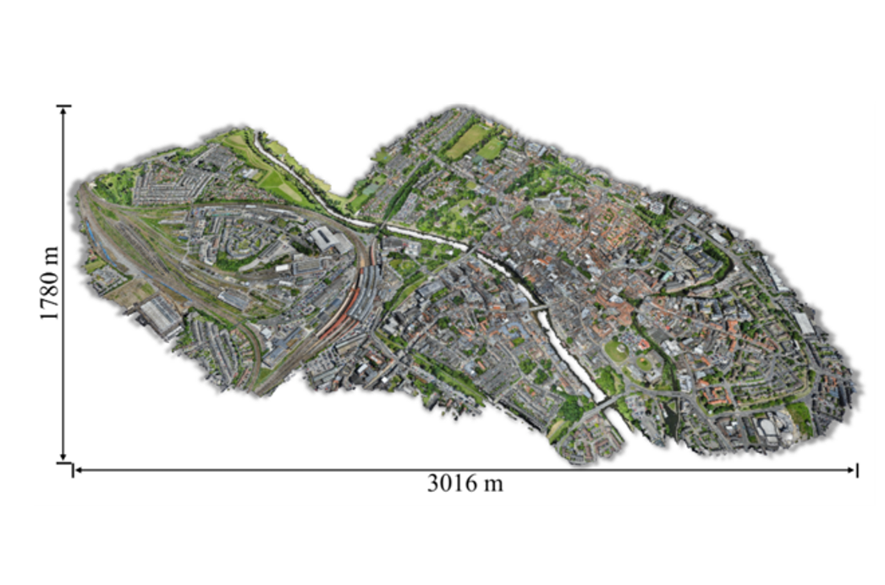
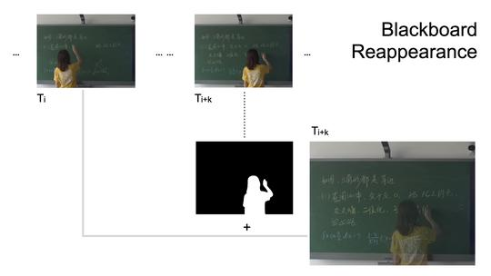

Projects

SensatUrban: Urban-Scale Point Clouds Understanding Challenge
is a BEV multi-sensor-fusion-based point cloud semantic segmentation implementation. Collaborated with Zhuangwei Zhuang.
Code
Board

Human Segmentation for Intelligence Education
aims to reappear the obscured content on the blackboard by teacher to improve the quality of online courses.
Collaborated with Zhuoman Liu, Gang Dai, Jiaqiu Zhou.
Video

Deep View Synthesis via Self-Consistent Generative Network
aims to synthesize the front view from left and right views.
Coolabrate with Zhuoman Liu and etc.
Code
Video
Dataset
Experience
[2021.12 - 2022.07]
Remote Collaboration, Inria-ASTRA, Paris, French
[2020.10 - 2021.09]
Algorithm Intern, Pazhou Lab, Guangzhou, China
[2018.10 - 2019.06]
Algorithm Intern, CVTE Research, Guangzhou, China
Honors
[2020]
Postgraduate Recommendation Scholarship, China
[2018]
National Encouragement Scholarship, China
[2017]
National Encouragement Scholarship, China
 Google Scholar
Google Scholar GitHub
GitHub